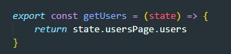
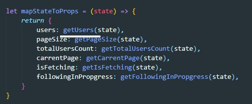
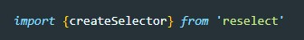
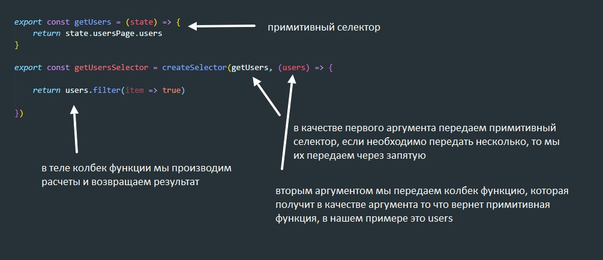

Селектор - это функция которая принимает state и возвращает определенный участок state
Пример
Теперь в функции mapStateToProps мы используем наш селектор
Но совершенно не обязательно, что селектор будет таким простым, возможно что нам нужно будет отфильтровывать данные из state и возвращать уже эти данные. В этом случае селектор будет не примитивным и существенно может нагружать нашу систему. В результате потеря производительности. Как бы нам сделать так что бы функция селектора вызывалась только тогда когда произойдет изменение в state. Ведь сейчас вызов селектора происходит в любом случае при изменения любого участка state.
Предположим что наш селектор где-то будет хранить пришедшую копию участка state который он вернул в прошлый раз и будет в случае отсутствия изменений в этом участке возращать его, т.е. пересчета данных не произойдет. Вот именно этим и занимается библиотека reselect
Для установки библиотеки в консоли вводим команду
npm install reselectУ этой библиотеки есть метод создания селектора - createSelector, что бы им воспользоваться не забываем импортировать метод
вот как выглядит создание селектора
reselect будет где то у себя хранить предыдущую версию state который нам вернул предыдущий вызов, и при последующем вызове если данные не изменены (т.е. функция будет их сравнивать) то она вернет то что возвращала в прошлый раз без расчетов.